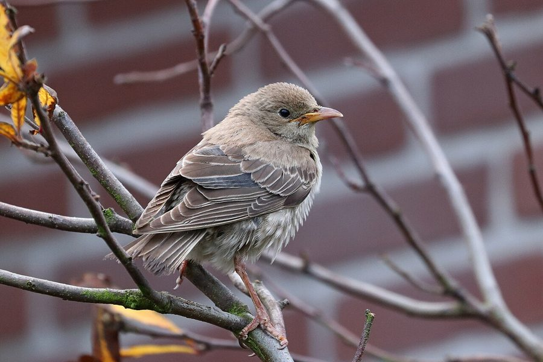

गुलाबी मैनाRosy Starling
Pastor roseus · Sturnidae · BRD-0065

- Scientific name
- Pastor roseus (Linnaeus, 1758)
- Family
- Sturnidae
- Hindi
- गुलाबी मैना
- Status here
- native
- IUCN
- LC
When to look कब देखें
Expected mainly in November, December, January, February, March, April.
गुलाबी मैना / Rosy Starling
Pastor roseus (Linnaeus, 1758) — Sturnidae
गुलाबी मैना (गुलाबी स्टार्लिंग / तिलइयर) — पूर्वी उत्तर प्रदेश के कृषि क्षेत्रों, घास के मैदानों और बाग-बगीचों में सर्दियों के दौरान देखा जाने वाला एक अत्यंत आकर्षक और सामाजिक प्रवासी पक्षी (myna/starling) है। यह एक शीतकालीन प्रवासी है जो मध्य एशिया (कजाकिस्तान और उजबेकिस्तान) के घास के मैदानों से हजारों की संख्या में झुंड बनाकर नवंबर में उत्तर भारत के मैदानों में पहुंचता है। वयस्क पक्षी का शरीर चमकीला गुलाबी (rose-pink body) होता है, जबकि उसका सिर, गर्दन, पंख और पूंछ चमकदार काले (glossy black head, wings, and tail) होते हैं। शाम के समय बसेरा करने से पहले, इसके विशाल झुंड हवा में एक साथ उड़ते हुए मंत्रमुग्ध कर देने वाली आकृतियां (dramatic aerial murmurations) बनाते हैं। यह फसलों को नुकसान पहुंचाने वाले कीड़ों, टिड्डों और विशेष रूप से टिड्डियों के झुंड (locust swarms) का शिकार करता है, जिसके कारण इसे किसानों का एक बड़ा रक्षक माना जाता है।
Quick Identification त्वरित पहचान
| Feature | Description |
|---|---|
| Size | Medium-sized starling (21–23 cm total length); slightly larger and stockier than Brahminy Starling |
| Colouration | Adult has a striking rose-pink mantle, breast, and belly; contrastingly glossy black head, wings, and tail |
| Head & Crest | Glossy black head with a prominent, shaggy crest of feathers extending down the nape |
| Flocks | Extremely gregarious; always observed in large, active, noisy flocks of hundreds or thousands |
| Murmurations | Flocks fly in dense, synchronized, cloud-like formations before settling to roost |
| Bare Parts | Bill is pinkish-yellow with a dark tip in winter; legs and feet are pinkish-brown |
Field tip: Look over sugarcane fields or large village wetlands in the late afternoons of December and January. Watch for massive, cloud-like flocks of birds flying in perfect unison, turning and twisting together in the sky. If they descend into trees or crops, listen for their loud, combined chattering. The female is slightly duller grey-pink and is shown in the field tip.
Morphology आकारिकी
Biometrics (typical measurements in the northern Indian plains):
| Measurement | Range |
|---|---|
| Total length | 210–230 mm |
| Wing (flattened chord) | 120–135 mm |
| Tail | 65–75 mm |
| Tarsus | 28–32 mm |
| Bill (culmen from base) | 18–21 mm |
| Weight | 60–90 g |
Plumage: In breeding plumage, the mantle, back, breast, and abdomen are uniform pastel rose-pink. The head, throat, wings, and tail are glossy black with metallic purple and green highlights. In winter, when they visit UP, the pink feathers are dulled by brown margins, and the black feathers have grey-brown tips, which gradually wear off by spring. The head crest is shaggy and can be raised when excited. Immatures are sandy-brown with pale grey wings and lack the pink-and-black pattern.
Bare parts: The bill is pinkish-yellow, turning yellow-orange during spring. The irises are dark brown. The legs and feet are dull pink or pinkish-brown.
Vocalisations
Rosy Starlings are highly vocal, producing a constant, noisy chattering when in flocks.
- Flock chatter: A loud, harsh, grating mixture of whistles, squeaks, and rasping notes: kree-kree-tshrr-tshrr, repeated continuously by the group.
- Song: A rapid, chattering song delivered by males in spring before migration, containing mimicked calls of other birds.
Behaviour & Ecology व्यवहार और पारिस्थितिकी
- Locust specialist: The Rosy Starling is a specialized predator of grasshoppers and locusts. During locust plague years, large flocks follow the swarms, killing many more insects than they can eat, which serves as a major biological control of crop pests.
- Murmurations: Before roosting at sunset, the flocks perform dramatic murmurations. They fly in highly coordinated, swirling clouds to confuse birds of prey (like falcons and harriers) before dropping quickly into roosting cover.
- Frugivory: During winter, they also feed heavily on wild berries, Banyan figs, and nectar from Semal and Coral tree flowers.
Life Cycle / Phenology जीवन चक्र
- Breeding: Does not breed in Uttar Pradesh. They breed in vast colonies of up to 100,000 pairs in the steppes of Central Asia (Kazakhstan, Kyrgyzstan, southern Russia) from May to July.
- UP migration calendar: Flocks arrive in the Basti district in November, moving nomadically depending on food availability. They roost in sugarcane fields, reedbeds (Phragmites karka), and large mango orchards. They depart north in March and April.
- Nesting in breeding range: Builds a simple nest of dry grass and twigs in cavities among rocks, stone walls, or on the ground.
Host Plants or Prey आहार
Primary food items:
- Insects: Grasshoppers, locusts (Schistocerca gregaria), crickets, beetles, and caterpillars.
- Fruits & Nectar: Figs of Banyan and Peepal; berries of Neem and Ber; nectar of Semal and Indian Coral Tree.
Predators / Natural Enemies शत्रु
- Raptors: Peregrine Falcons, Laggar Falcons, and Marsh Harriers (Circus aeruginosus) actively hunt flying flocks of Rosy Starlings.
- Corvids: House Crows mob feeding flocks and compete for roosts.
- Mammals: Mongoose and wild cats prey on them when they feed on the ground or roost in low reeds.
Agricultural / Human Relevance कृषि प्रासंगिकता
Critical biological pest control. By preying heavily on locusts and grasshoppers, Rosy Starlings protect standing cereal and vegetable crops from destruction. Historically, their arrival was celebrated by farmers as a sign of safety from locust plagues.
Conservation and legal status: Protected under Schedule IV of the Wildlife Protection Act, 1972. They are generally secure due to their large numbers, but are vulnerable to heavy pesticide use in crop fields, which poisons their insect food supply, and the destruction of large wetland reedbeds where they roost.
Expected Locally स्थानीय रूप से अपेक्षित
Not a field record. Written from published accounts for eastern Uttar Pradesh. No confirmed local sighting yet — if you have seen it, that is what the atlas needs.
अभी तक स्थानीय पुष्टि नहीं। यह विवरण प्रकाशित स्रोतों से है, किसी अवलोकन से नहीं।
A common winter visitor to Basti district, especially in the agricultural fields of the Harraiya, Khalilabad, and Vikramjot blocks. Their wheeling flocks are a common sight over harvesting wheat fields in December and January. They are known to roost in large numbers in the extensive sugarcane fields near village settlements.
Distribution वितरण
Global range: Breeds from southeastern Europe and Central Asia to northwestern China; migrates south to winter primarily in the Indian Subcontinent.
In India: A widespread and abundant winter visitor to all open plains, grasslands, and agricultural districts.
In Uttar Pradesh: A regular winter visitor state-wide, particularly numerous in agricultural basins.
In Basti district / eastern UP: Regularly recorded in winter months in all blocks, moving nomadically.
Research Questions शोध प्रश्न
Anyone can investigate these | कोई भी इन प्रश्नों की जाँच कर सकता है
- How many minutes does a Rosy Starling murmuration display last before the birds descend into their roosting site in Basti? — Measure and record flight times at sunset.
- Do Rosy Starlings prefer roosting in sugarcane fields over tall reedbeds in your block? / क्या गुलाबी मैना आपके क्षेत्र में गन्ने के खेतों में बसेरा करना नरकट (reedbeds) के बिस्तरों की तुलना में अधिक पसंद करती है? — Locate and compare roosting sites.
- What is the average number of grasshoppers captured per minute by a feeding Rosy Starling in a wheat field? — Conduct foraging observations.
- How do flocks of Rosy Starlings respond when a Marsh Harrier flies within fifty meters of their feeding site? — Document escape flight behavior.
- What date are the last Rosy Starling flocks recorded in Basti each spring? / हर साल वसंत ऋतु में बस्ती में गुलाबी मैना के अंतिम झुंड किस तारीख को देखे जाते हैं? — Track spring departure dates through community birdwatches.
Similar Species मिलती-जुलती प्रजातियाँ
| Species | How to tell apart | हिंदी |
|---|---|---|
| Brahminy Starling (Sturnia pagodarum) | Much smaller (19–21 cm); pale grey back; chestnut breast (lacks rose-pink); yellow-and-blue bill | ब्राह्मणी मैना — छोटा आकार, धूसर पीठ, कत्थई छाती, कलगीदार सिर |
| Common Myna (Acridotheres tristis) | Dark brown plumage (lacks rose-pink); yellow skin behind the eye; yellow bill; white wing patches | देसी मैना — भूरा शरीर, आँख के पीछे पीली त्वचा, सफ़ेद पंख के धब्बे |
| Asian Pied Starling (Gracupica contra) | Bold black-and-white plumage; orange orbital skin; orange-and-white bill; lacks crest and pink color | अबलकी मैना — सफ़ेद और काला शरीर, नारंगी आँख के पास की त्वचा |
Field rule: Medium-sized starling with a pastel rose-pink body, contrasting glossy black head, wings, and tail, flying in large, noisy, synchronized flocks in winter, is a Rosy Starling.
Taxonomy & Classification वर्गीकरण
Original description. Carl Linnaeus described the Rosy Starling as Turdus roseus in 1758 in his Systema Naturae (ed. 10, vol. 1, p. 180). The type locality was Lapland. Charles Lucien Bonaparte placed it in the genus Pastor in 1838. The genus name Pastor is Latin for a shepherd, referencing the bird's habit of feeding with sheep and cattle. The specific name roseus is Latin for rose-coloured, referring to the pink plumage.
Subspecies. Monotypic — no subspecies are currently recognised.
Family and order placement. Placed in the order Passeriformes, family Sturnidae (starlings and mynas).
Phylogenetic notes. Pastor roseus is closely related to the genus Sturnus (temperate starlings), but is kept in its own monotypic genus Pastor due to its unique plumage and nomadic feeding adaptations.
IUCN status rationale. Listed as Least Concern (LC) due to its massive range and stable population, showing high resilience to agricultural expansion.
Photo Gallery फोटो गैलरी
References संदर्भ
- Linnaeus, C. (1758). Systema Naturae. Tenth Edition. Holmiae, p. 180. [original description]
- Ali, S. & Ripley, S. D. (1999). Handbook of the Birds of India and Pakistan. Vol. 5. Oxford University Press, New Delhi.
- Grimmett, R., Inskipp, C. & Inskipp, T. (2011). Birds of the Indian Subcontinent. 2nd ed. Christopher Helm, London.
- Feare, C. & Craig, A. (1998). Starlings and Mynas. Christopher Helm, London.
- BirdLife International (2024). Pastor roseus. IUCN Red List of Threatened Species. Ver. 2024.
- GBIF Occurrence Data — Pastor roseus, Uttar Pradesh (2010–2025).
Source file: species/fauna/birds/rosy_starling.md